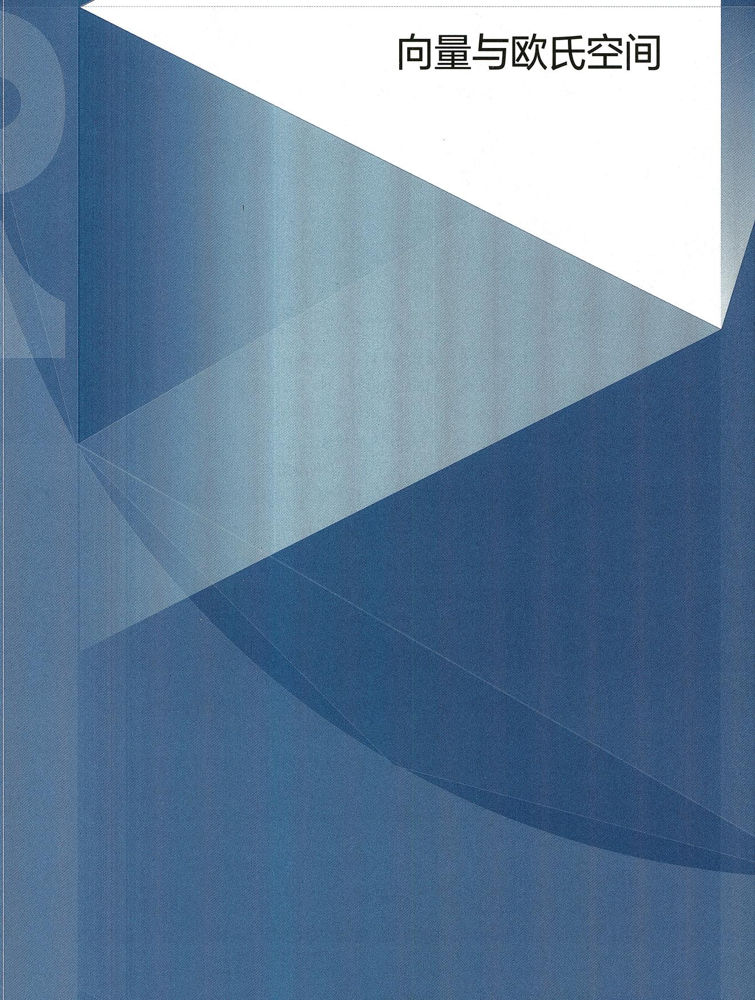
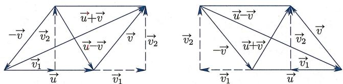
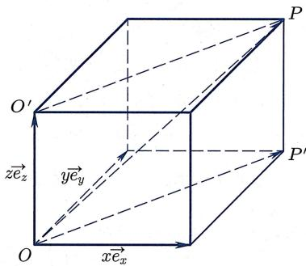
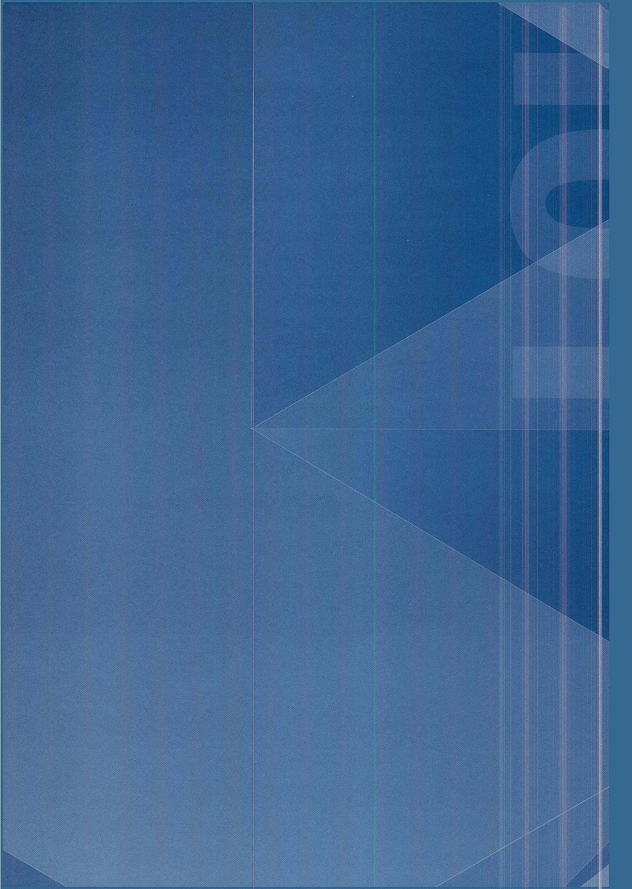

本章导引

image
几何变换是本书的中心论题. 本章先从几何变换的角度出发, 逐步建立向量运算的法则, 从几何上给出线性代数的基本对象: 向量空间以及欧氏空间. 然后我们转到标准的代数方式, 即打破对称引入坐标系, 将向量运算归结为数的运算. 作为向量理论以及坐标法的应用, 最后一节将利用实数构建欧氏空间的模型并验证希尔伯特公理体系.
从现在开始, 承认中学几何里所熟知的结论, 不再逐一用希尔伯特公理证明.
§2.1 向量与向量空间
2.1.1 反射与平移
反射变换
由定理 1.2.20, 对于平面中任意直线 l 以及任意点 A, 存在唯一直线 包含 A 且跟 l 垂直. 令 O 为 l 与 的交点. 则由希尔伯特公理 (III.1), 在直线 上点 O 的另一侧, 存在唯一的点 B 使得 .
定义 2.1.1 (反射变换) 给定平面 内的任意直线 l 以及点 A,概念定义
定义 2.1.1 (反射变换) 给定平面 内的任意直线 l 以及点 A,
- 称如上所得到的点 为点 关于直线 的反射点.
- 称映射
为平面 内关于直线 的反射变换（简称反射），并称 为其反射轴.
于是, 熟悉的反射变换也可以被轻易纳入希尔伯特公理体系. 由定义不难验证:
命题 2.1.2 (反射变换的性质)命题
命题 2.1.2 (反射变换的性质)
- 对于任意 , 有 .
- 若 且 , 则 为线段 的中垂线.
类似地, 根据思考题 1 第 III 题里 “空间中从任一点到任一平面的垂线存在且唯一”, 可以定义空间里关于平面 的反射变换 , 且它也满足以上性质. 下面证明
命题 2.1.3 (线段的反射) 设 P, Q 关于直线 的反射点为 . 则命题
命题 2.1.3 (线段的反射) 设 P, Q 关于直线 的反射点为 . 则
- .
- 在跟直线 (或平面 ) 垂直的直线 上取一点 , 使得 和 都位于 点的同一侧. 则 与 互补.
证明 分情况讨论.证明
证明 分情况讨论.
先设 P, Q 都不位于直线 l 上, 且 P, Q 所在直线跟直线 不垂直.
若 位于直线 (或平面 ) 的同一侧, 则 是一个梯形, 且点 位于底边
的延长线上. 因为该梯形关于直线 对称, 它是一个等腰梯形, 于是上面两个结论都成立.
若 位于直线 (或平面 ) 的异侧, 则同样的论证说明 是一个等腰梯形, 且点 位于底边 的延长线上. 因为 与 是该等腰梯形的对角线, 同样可知两个结论都成立.
最后, 对于 或 位于直线 (或平面 ) 上的情况, 以及 所在直线跟直线 (或平面 ) 垂直的情况, 只要简单修改上述论证 (此时梯形将会退化成三角形或者线段) 即可.
向量
记 为平面或空间. 给定 中任意两点 , 存在唯一一条连接它们的线段 . 但是, 线段仅仅包含了“长度”信息 (在希尔伯特公理体系中, 两条线段合同当且仅当它们在迁移下可重合, 直观的理解就是它们的长度一样). 我们知道, 不同的两点所确定的“方向”也是一个很重要的几何信息, 而方向是由角度确定的:
定义 2.1.4 (方向) 设 AB, 是两条线段, 且 A, B, 共面. 若它们满足以下条件之一:概念定义
定义 2.1.4 (方向) 设 AB, 是两条线段, 且 A, B, 共面. 若它们满足以下条件之一:
- : 共线, 且 在该直线上点 的同侧;
- : 都在直线 的同侧或都在直线 上, 且在直线 上存在点 , 使得 在 的同侧, 且 (此处允许零角或平角), 则称 与 方向相同.
当然, 这里需要验证 “方向相同” 跟定义中 D 的选取无关 (见习题 2 第 3 题). 我们用符号 表示带有方向的线段, 称点 A 为 的起点, 而称点 B 为 的终点. 注意 的方向跟 A, B 两点的前后顺序有关. 接着, 在所有 “带有方向的线段” 所组成的集合中定义等价关系 (参见附录)
所得等价类称为向量, 并依然用 表示. 下述引理是定义的直接推论:
引理 2.1.5 若 ，则 .命题/引理
引理 2.1.5 若 ，则 .
为了方便起见, 我们允许向量的起点与终点是同一个点, 即允许使用向量 : 它的长度为零, 且没有方向. 注意对于任意 , 总有 , 也就是说, 该向量与点 的选取无关. 我们把它叫做零向量, 并记为 , 即
平移变换
为了定义向量之间的运算, 下面引入平移变换的概念:
定义 2.1.6 (平移变换) 设 是平面或者空间 X 到自身的映射. 如果存在向量 使得概念定义
定义 2.1.6 (平移变换) 设 是平面或者空间 X 到自身的映射. 如果存在向量 使得
则称 是 上的一个平移变换（简称平移），并称 为该平移变换的平移向量.
定义中的条件可等价换成
引理2.1.7(平移变换的等价刻画) 映射 是 上的平移变换当且仅当命题/引理
引理2.1.7(平移变换的等价刻画) 映射 是 上的平移变换当且仅当
证明 根据定义, 映射 是 X 上的平移变换当且仅当证明
证明 根据定义, 映射 是 X 上的平移变换当且仅当
上式等价于 为平行四边形，即
(当 Q 在直线 上时, 视之为 “退化” 的平行四边形, 上述论证依然成立.)
平移变换跟反射变换有着密切的关系：
命题2.1.8(关于两个平行平面或两条平行直线的反射) 设 是空间 中的两个平行平面（或者 l_{1}命题
命题2.1.8(关于两个平行平面或两条平行直线的反射) 设 是空间 中的两个平行平面（或者 是平面 里的两条平行直线)，则
是 X 上的一个平移变换.
证明 对于任意 , 令 为 关于 的反射点, 证明
证明 对于任意 , 令 为 关于 的反射点, , 为 关于 的反射点. 因为 和 平行, 所以 共线. 在该直线上选取点 使得 位于点 的同一侧. 两次运用命题 2.1.3, 可得
即 . 于是由引理 2.1.7 知 是一个平移变换.
特别地, 存在非常多的平移变换:
定理 2.1.9 (特定平移变换的存在唯一性) 任给 X 中 (可以相同的) 两点 A, B, 存在唯一的平移变换 \tau: X \rightarrow X核心定理
定理 2.1.9 (特定平移变换的存在唯一性) 任给 X 中 (可以相同的) 两点 A, B, 存在唯一的平移变换 使得 .
证明 先证存在性. 若 , 则恒等变换即满足条件.证明
证明 先证存在性. 若 , 则恒等变换即满足条件.
若 , 可利用反射构造所需的平移. 令 为线段 的中点. 令 分别为和直线 垂直相交于 和 的两个平面 (在二维情形, 则取跟直线 垂直相交于 和 的两条直线, 下文做类似修改即可), 则 与 平行. 对于 , 令 为 中关于平面 的反射变换. 则复合映射 即为所求 (图2.1):
 image
image
图2.1 两个反射
再证明唯一性. 设 为空间任意一点, 是上述平移变换, 而 是另一将 映到 的平移变换, 则
由引理2.1.5得 . 由于 是任意点, 故 .
平移变换的复合
接下来证明两个平移变换的复合也是平移变换, 且平移变换在复合时可交换顺序:
定理 2.1.10 (平移变换的复合) 设 和 为 X 上的两个平移变换, 则 也是一个平移变换, 而且
证明 首先证明两个平移的复合 也是平移. 设 为空间中任意两点. 如图2.2所示, 记证明
证明 首先证明两个平移的复合 也是平移. 设 为空间中任意两点. 如图2.2所示, 记
 image
image
图2.2 平移的复合
由定义，
故 和 都是平行四边形, 从而 也是平行四边形, 即
于是 是一个平移变换.
然后证 . 由定义, , 故 为平行四边形, 从而
于是由引理2.1.5及点 的任意性可知 .
由定理 2.1.9 和定理 2.1.10, 若 是把 A 映为 B 的唯一平移变换, 是把 B 映为 A 的唯一平移变换, 则 是把 A 映为 A 的唯一平移变换, 即恒等变换 (记为 Id). 换而言之, 是 在映射复合下的逆变换:
推论 2.1.11 (平移变换的逆变换) 设 是平移变换. 若存在点 A, B 使得 \tau_{1}(A) = B推论
推论 2.1.11 (平移变换的逆变换) 设 是平移变换. 若存在点 A, B 使得 且 ，则 .
用群论的语言 (参见附录 A.2), 命题 2.1.2(2) 说明了 的逆映射也是 , 从而 构成了一个最简单的 (只有两个元素的) 群; 定理 2.1.10 和推论 2.1.11 说明平面或空间的所有平移变换的集合关于 “映射复合运算” 形成一个阿贝尔群 (见定义 A.2.1).
2.1.2 向量与向量空间
平移变换集合与向量集合
下面在全体向量组成的集合
与全体平移变换组成的集合
之间建立自然的双射, 从而可以把 “平移变换之间的复合运算” 移植到向量集合上, 建立向量之间的加法运算. 我们把这种做法叫做 “结构迁移”.
对于任意平移变换 以及点 ，令
注意由平移变换的定义, 对于任意 , 有 , 故向量 不依赖于点 的选取, 从而是良定的. 下面证明
映射 是一个双射, 且满足
- , 其中 为恒等映射;
- 若 , 则 .
证明 先定义映射 如下：对任意 \overrightarrow{AB} \in \ma证明
证明 先定义映射 如下：对任意 ，令 为由定理2.1.9所确定的唯一满足 的平移变换 。则
- (从而 为满射): 若 , 记 为使得 的平移变换, 则
- (从而 为单射): 若 , 则对于任意 . 于是映射 为双射, 而 为其逆映射.
最后, 由定义, 立刻可验证
- ;
- 若 , 则 , 即 , 从而 .
向量加法
下面把集合 上的“映射复合运算”移植到集合 上. 为了符号简便起见, 我们将 中的元素记为 .
定义 2.1.13 (向量加法) 在 V 上定义加法运算如下:概念定义
定义 2.1.13 (向量加法) 在 V 上定义加法运算如下:
注意由定理 2.1.10, 上述定义是有意义的, 因为两个平移变换 和 的复合还是平移变换, 从而被 映为一个向量.
由定义不难验证向量加法满足如下的三角形法则：
命题 2.1.14 (加法的三角形法则) 对任意向量 和 (图 2.3)命题
命题 2.1.14 (加法的三角形法则) 对任意向量 和 (图 2.3), 有
 image
image
图2.3 三角形法则
因为 所以 这说明
利用 和 , 可以把“映射复合”的特定性质移植到 上:
① 从映射复合的结合律可得上述加法运算的结合律：
结合律 对任意 ，均有
② 恒等映射是映射复合运算的单位元, 于是 也是加法运算的单位元:
单位元 对任意 , 均有 .
③ 由推论2.1.11, 对于 , 若令 , 则:
逆元存在 对任意 , 均有 .
④ 由定理2.1.10, 平移变换的复合满足交换律, 从而加法运算也满足交换律:
交换律 对任意 ，均有
上述①, ②, ③说明 是一个群, 而加上④则说明 是一个阿贝尔群.
这 4 条的证明类似于上述证明过程, 都是基于结构迁移. 以②和④为例:
向量的数乘
严格说来, 我们只定义过线段长度是否相同 (即合同), 并由此衍生定义出 “一条线段比另一条线段长” 这样的概念 (见习题 1 第 13 题), 但并没有给线段长度赋以具体的数值. 但是, 即使不对向量赋以长度值, 对于任意向量 , 利用相似三角形也可以很容易构造出 “与 同向且长度为 的两倍” 的向量. 更进一步, 还可以依次构造出 的正整数倍或正有理数倍长度的向量. 最后, 利用完备性公理, 可以证明 (整个过程类似于下文定理 2.2.4 的证明) 对于任意实数 , 存在与 同向且长度为 的 倍的向量. 此处需要强调的是: 在这个过程中, 并不需要对向量赋以长度值 (换而言之, 向量运算并不需要 “长度结构”).
于是, 通过研究相似三角形, 可以在集合 上引入一个新运算, 即数乘运算:
定义 2.1.15 (数乘) 对于任意 以及任意 ，定义向量 概念定义
定义 2.1.15 (数乘) 对于任意 以及任意 ，定义向量 如下：
由定义, 当 时, 为跟向量 具有相同方向 (也称“跟向量 具有相反方向”) 且长度为 的 倍的向量.
向量的数乘运算满足如下基本性质：
满足
⑤ “数与数的乘法”与“数与向量的数乘”这两种乘法运算是相容的：
乘法相容性 | 对任意 , 均有 .
⑥ 1 不仅是数与数的乘法的单位元, 而且也是数乘的单位元:
数乘单位元 | 对任意 , 均有 .
⑦ 数乘对“数的加法”有分配律：
第一分配律 对任意 , 均有 .
⑧ 数乘对“向量加法”也有分配律：
第二分配律 对任意 ，均有
证明 仅证明⑤和⑧的一部分, 其余留作练习.证明
证明 仅证明⑤和⑧的一部分, 其余留作练习.
对于⑤, 可以按照 的正负性, 分 5 种情况讨论. 这里仅讨论其中 2 种:
情形 1
此时 . 于是由定义,
情形 2
此时 . 于是由定义,
剩下的3种情形
情形3 ;
情形4 ;
情形5 或
的证明留作练习.
对于⑧, 同样分类讨论:
情形 1
不妨设 , , 并记
如图 2.4 所示. 由
可知 相似于 , 故有
于是结合命题2.1.14可得
 image
image
图2.4 相似三角形
情形 2 .
由定义及情形 1, 有
情形 3 . 结论显然成立.
于是, 按照附录 A.3 的定义 A.3.1 可知, 在被赋予加法和数乘后, V 是一个 (实) 向量空间. 向量空间是现代数学中最基本的研究对象之一.
§2.2 欧氏空间
2.2.1 向量的内积
范数与平行四边形法则
向量空间是其元素可以加减和拉伸的空间, 但不必有长度和角度. 接下来赋予向量空间 V 很多别的结构. 例如, 如果固定一个单位长度, 则可以赋予每个向量一个长度, 从而得到一个 “向量长度函数”
不难验证
命题 2.2.1 (范数的性质) V 上的函数 |·| 满足命题
命题 2.2.1 (范数的性质) V 上的函数 |·| 满足
- (正定性) 对于任意 , 有 ; 且 .
- (正齐次性) 对于任意 以及 , 均有 .
- (三角不等式) 对于任意 , 均有 .
于是根据定义 A.3.8, V 上的 “向量长度函数” 是 V 上的一个 “范数” 结构.
下面说明在 上还有一个隐藏在范数结构背后的结构, 即内积结构 (参见定义 A.3.10), 而该结构跟大家所熟悉的勾股定理密切相关. 勾股定理可以用向量和范数语言表述如下:
定理2.2.2（勾股定理） 若 且 ，则 |\v核心定理
定理2.2.2（勾股定理） 若 且 ，则
从勾股定理出发, 可以证明
定理2.2.3（平行四边形法则） 对于任意 ，均有 |\vec{u} +\vec{v}|^2核心定理
定理2.2.3（平行四边形法则） 对于任意 ，均有
证明 把 向 所在直线上作垂直投影, 得向量的“正交分解” \vec{v} = \vec{v}_1 + \vec{v}证明
证明 把 向 所在直线上作垂直投影, 得向量的“正交分解” , 其中 与 垂直, 与 同向或反向, 如图2.5所示:

image
图2.5 向 方向的正交分解
由勾股定理, , 故
从而定理得证.
内积
当然, 可以认为隐藏在平行四边形法则背后的是余弦定理, 而后者恰好是跟向量之间的夹角相关的. 于是, 从平行四边形法则出发 (即仅从满足特定条件的长度出发), 有望得到角度的信息. 为此, 对于任意 , 受余弦定理启发, 令
函数 被称为长度函数 的极化, 它满足如下性质:
定理2.2.4（内积性质）核心定理
定理2.2.4（内积性质）
函数 是 上的一个内积, 即满足 (定义
A.3.10)
- (正定性) 对任意 , 均有 ; 且 .
- (对称性) 对任意 , 均有 .
- (双线性性) 对任意 , 均有
-
-
证明 (1) 由定义可得 (注意, 该计算说明为什么定义中会有系数 )证明
证明 (1) 由定义可得 (注意, 该计算说明为什么定义中会有系数 )
故由命题 2.2.1 的正定性即得欲证.
- 由向量加法交换律可得
- 由对称性, 只需证明二者之一即可. 下面证明
将 的定义代入上式并整理, 要证的式子变成
为此, 我们对以下 4 组向量分别应用平行四边形法则:
- 对 和 用：
- 对 和 用：
- 对 和 用：
- 对 和 用：
上述四个式子相加即得欲证.
- 同样由对称性, 只需证明二者之一即可. 下面证明
该式的证明跟以前所学定理证明有所不同：为了处理任意实数与向量的乘法，需要使用实数的完备性. 我们将按照 为自然数、整数、有理数、实数进行分级，一步一步证明.
第一级 为非负整数：若 或1,该式自动成立.若 ，用数学归纳法证明：设命题对正整数 成立，则
第二级 为整数：只需考虑 ，此时由
即得欲证.
第三级 为有理数：将 写作 ，其中 且 。由第二级，只需对 证明该结论即可。由第一级，有
故有
第四级 为实数：由欧多克索斯-阿基米德公理，对任意正整数 ，存在整数 使得
由 (3a) 以及第三级的结论, 可得
另一方面, 由三角不等式易证 (习题 2 第 5 题 (b))
于是上式的第一项
从而对于任意固定的
于是对于任意 ，通过选取充分大的 ，就有
这说明 .
一般把两个向量 和 的内积记为 或 或 . 于是从 上的 (满足平行四边形法则的) 范数结构出发, 可以得到 上的一个内积结构, 且二者满足
这个式子常被称为极化恒等式.
注2.2.5 对于抽象的向量空间而言，内积结构强于范数结构：
- 若 是任意抽象向量空间 上的一个内积, 则可以验证
是 上的一个范数 (见附录A.3练习A.3.11). 该范数被称为内积 的诱导范数. 于是有内积结构必有相应的范数结构.
- 反之, 抽象向量空间 上的范数不一定是由它上面某个内积所诱导的 (反例见习题 2 第 6 题). 事实上, 仔细阅读和分析上面对定理 2.2.4 所给出的几何证明, 可得如下结论: 若抽象向量空间上的范数满足平行四边形法则, 则一定存在内积诱导出该范数.
内积的几何含义
内积结构的重要性在于它给出了角度信息. 对于 中任意两个向量, 由内积可以得到它们的夹角. 为方便起见, 规定零向量 具有所有方向 (从而既跟任意向量平行, 又跟任意向量垂直), 即零向量跟任意向量垂直 (也称正交). 注意勾股定理对于零向量依然成立. 回忆一下余弦定理,
利用内积与长度的关系 (即极化恒等式), 可以把余弦定理改写成
定理 2.2.6 (余弦定理) 设 之间的夹角为 ，则有 \vec{u} \cdot \vec{v} 核心定理
定理 2.2.6 (余弦定理) 设 之间的夹角为 ，则有 .
作为推论, 可得
命题2.2.7(内积与角度) 设 ，则有命题
命题2.2.7(内积与角度) 设 ，则有
- 当且仅当 .
- 若 , 则 的绝对值等于 往 方向所作投影的长度; 进一步当二者夹角小于 时 为正, 当夹角大于 时 为负.
证明 (1) 设 , 由余弦定理得 . 反之, 若 \证明
证明 (1) 设 , 由余弦定理得 . 反之, 若 , 则由余弦定理, 要么 或 , 要么 , 即 . 于是总有 .
- 设 , 则 . 但由余弦的几何意义, 在 方向投影向量的长度为 , 于是结论成立.
若 ，称 为一个方向向量（或单位向量），并称 为 往 方向所作投影的有向长度。对于任意非零向量 就是 方向的方向向量。
总而言之, 内积结构不仅蕴含了向量的长度信息, 还蕴含了向量间夹角的信息.
2.2.2 欧氏空间
单位正交基与坐标映射
按照定义 A.3.12, 被赋予了内积结构的向量空间叫做欧氏空间. 于是, 我们从希尔伯特公理体系出发就构建出了欧氏空间 V. 所得到的欧氏空间 V 可以是二维的或者三维的, 取决于起始对象是平面平移 (平面向量) 还是空间平移 (空间向量). 几何方法的优点之一在于其 “对称性”: 在前面所有处理过程中, 除了零向量 , 所有向量都是 “平等” 的, 即没有一个向量比别的向量更特殊.
打破对称往往是从外部理解几何的开始。下面通过赋予特定的方向向量特殊地位（即建立直角坐标系），将欧氏空间 中的元素及相关运算（加法、数乘、内积）代数化。这可被视为毕达哥拉斯学派“万物皆数”理念的某种体现。
为了行文的便利, 下面取定 V 为空间向量的集合.
定义 2.2.8 (单位正交基) 若 V 中的三个向量 满足概念定义
定义 2.2.8 (单位正交基) 若 V 中的三个向量 满足
- 均为单位向量：
- 两两垂直：
则称 为 V 的一组单位正交基.
单位正交基的存在性是显然的: 任给一个单位向量, 在跟它垂直的平面内任取两个互相垂直的单位向量, 这三个向量就构成一组单位正交基. 显然, 单位正交基并不唯一.
固定单位正交基, 就可以在 “空间 V 中向量” 和 “实数三元组” 间建立一一对应:
命题2.2.9(坐标映射) 在空间中取定一组单位正交基 ，记命题
命题2.2.9(坐标映射) 在空间中取定一组单位正交基 ，记
分别为 往 方向投影的“有向长度”. 则
且下述映射是一个双射：
证明 对于任意 , 分别记 往 \vec{e}_x, \vec{e}_y,证明
证明 对于任意 , 分别记 往 方向的投影为 , 则
分别记 往平面 的投影点为 , 则 为长方体, 且 为它的一条对角线. 于是
即
由此立刻可得 c 是单射：若 ，则
最后, 是满射: 给定任意有序数组 , 令
则 且 .
命题中的 分别被称为向量 的 -坐标、 -坐标以及 -坐标。作为推论，有如下的“空间勾股定理”(图2.6):
定理 2.2.10 (空间勾股定理) 对于 V 的任意单位正交基 ，以及核心定理
定理 2.2.10 (空间勾股定理) 对于 V 的任意单位正交基 ，以及任意 ，有
其中 分别为向量 的 -坐标、 -坐标以及 -坐标.

image
图2.6 空间勾股定理
三维欧氏空间
跟本章第一节类似, 利用双射 , 可以把 上的向量加法、数乘与内积结构都移植到 上. 例如, 对于 及 , 利用映射 诱导的“结构迁移”,
可以定义
但是, 上述三个式子不便于使用. 因此, 需要把右端计算出来:
命题 2.2.11 (结构迁移的结果) 对于 及 ，有命题
命题 2.2.11 (结构迁移的结果) 对于 及 ，有
-
-
- .
证明 (1) 若 , 则证明
证明 (1) 若 , 则
于是 ，即
- 若 , 则 , 从而
- 若 , 则
因为最终的计算公式仅涉及数的运算, 所以不妨跳过 “几何意义”, 直接定义定义 2.2.12 ( 上的加法与数乘) 对 及 , 定义
定义 2.2.13 ( 上的内积) 对 ，定义概念定义
定义 2.2.13 ( 上的内积) 对 ，定义
不难验证:
- 赋予由定义2.2.12给出的加法与数乘后, 是一个向量空间 (即满足定义A.3.1).
- 在向量空间 上, 由定义2.2.13所给出的乘积满足内积的三条性质 (见定义A.3.10). 称赋予了上述加法、数乘、内积的空间 为三维欧氏空间, 并记为 .
注2.2.14 类似地, 对任意自然数 , 可以在
上面定义
- 加法: .
- 数乘： .
- 内积: .
不难验证 上赋予了上述加法、数乘、内积后，成为一个 维欧氏空间（参见定义A.3.12)，并被记为 。我们称
为 的标准正交基，称
为向量 关于标准正交基的坐标分解. 注意到 ，从而 关于标准正交基的坐标分解可以写成
§2.3 上的外积
是最重要也最特殊的欧氏空间, 不仅仅因为我们生活的空间是三维的, 而且还因为在 上除了加法、数乘、内积 (以及范数) 结构之外, 还有一个在数学和物理学中都非常重要的结构: 外积. 外积跟所学过的所有运算都有所不同: 它不是可交换的, 而是反交换的.
2.3.1 上的外积
右手螺旋法则
因为外积的向量顺序很重要, 所以在引入外积之前, 需要右手螺旋法则的概念:
定义 2.3.1 (右手螺旋法则) 设 为空间中三个不共面的向量 (从而 不共线),则 在 所决定平面的某侧.如果这三个向量符合
右手螺旋测试：以右手握拳，手指在 所决定的平面里弯曲，大拇指朝向 所在的那侧，则其余手指弯曲的方向就是从 到 的方向，
那么称有序向量组 满足右手螺旋法则.
满足右手螺旋法则的坐标系叫做右手系 (图 2.7):
定义 2.3.2 (右手系) 在空间上取定一点 O 作为坐标系原点. 设 概念定义
定义 2.3.2 (右手系) 在空间上取定一点 O 作为坐标系原点. 设 是 的一组单位正交基. 如果它们满足右手螺旋法则, 则称坐标系 为右手系. 右手系的一个等价刻画是
从 轴的正向看向原点， 沿逆时针方向转 到 。还可以把 依次序替换为 或 。
规定右手系的核心在于用它指定坐标轴基向量的一种正排序, 因此也称右手系给出了三维欧氏空间的一个正定向.
类似地, 对于平面坐标系 , 如果从 沿逆时针方向转 得到 , 则称该坐标系给出了平面的一个正定向.
 image
image
图2.7 右手系
外积的定义
定义 2.3.3 (外积) 对于任意 ，定义它们的外积 (也称作叉积或向量积) \vec{u} \t概念定义
定义 2.3.3 (外积) 对于任意 ，定义它们的外积 (也称作叉积或向量积) 为满足以下条件的唯一向量 (图 2.8):
 image
image
图2.8 外积
- 等于以 为边的平行四边形的面积.
- 其方向与 所在平面垂直，且使得 满足右手螺旋法则.
 image
image
注2.3.4 若 平行, 或者 之一为零向量 , 则由定义中的 (1) 可知 , 从而此时并不需要用定义中的 (2) 来指定方向.
例2.3.5 由定义可知：若 是一个右手系，则经典例题
例2.3.5 由定义可知：若 是一个右手系，则
特别地, 外积运算不满足结合律:
下述定理给出外积的基本性质：
定理2.3.6（外积的基本性质） 上的外积运算 满足核心定理
定理2.3.6（外积的基本性质） 上的外积运算 满足
- (反对称性) 对任意 , 均有 .
- (双线性性) 对任意 , 均有
-
- .
证明 (1), (2b) 由定义即得.证明
证明 (1), (2b) 由定义即得.
- 的几何证明较为繁琐, 我们将它留作习题 (分 4 问, 见习题 2 第 15 题).
注2.3.7 由反对称性, 对任意 , 均有 , 即
反之, 若一个“乘积运算” ， 满足
(1') (弱反对称性) 对任意 , 均有 .
和 (2) 即双线性性, 则反对称性 (1) 一定成立:
于是, 在假设双线性性的前提下, (1) 与 是等价的.
警告：外积运算没有结合律. 诸如 之类的式子是没有意义的, 因为没有指定外积的计算顺序, 一定要指明是 还是 (一般而言这两种顺序所算出的向量甚至连方向都不一样).
外积的几个恒等式
设 为 中的向量. 根据定义, 若 的夹角为 , 则
结合余弦定理 ，可得如下的
命题2.3.8(拉格朗日恒等式) |\vec{u}\times \vec{v}|^2 = |\vec{u}|^2 |\vec{v}|^2 -(\vec{u}\命题
命题2.3.8(拉格朗日恒等式)
另一个非常有用的恒等式是
命题 2.3.9 (BAC-CAB 恒等式) \vec{u} \times (\vec{v} \times \vec{w}) = (\vec{u}_{\par命题
命题 2.3.9 (BAC-CAB 恒等式)
该恒等式的证明留作习题 (见习题 2 第 16 题). 注意该式可被改写为
这是它被称为 BAC-CAB(谐音 back-cab“后面的出租车”, 便于记忆) 恒等式的原因. 由此可得
命题2.3.10(雅可比恒等式) \vec{u}\times (\vec{v}\times \vec{w}) + \vec{v}\times (\vec{w}命题
命题2.3.10(雅可比恒等式)
证明 由BAC-CAB恒等式以及内积的对称性得证明
证明 由BAC-CAB恒等式以及内积的对称性得
注2.3.11 若向量空间上的某个乘法结构满足反对称性、双线性性和雅可比恒等式，则称之为一个李代数结构。它是现代数学和物理学中一个常见且极其重要的结构。
外积的坐标公式
接下来用向量的坐标给出外积的计算公式. 取定右手系 , 并记
则由例2.3.5、反对称性以及 可得
特别地, 通过取 为标准正交基, 就有
命题 2.3.12 (外积的坐标公式)命题
命题 2.3.12 (外积的坐标公式)
更好地记忆和理解上述公式, 下面引入行列式的记号. 对任意 , 记
并称之为二阶行列式. 则
二阶行列式具有非常明确的几何意义：考虑平面向量 . 以原点为一个顶点，以 为边，张成一个平行四边形. 则由拉格朗日恒等式，该平行四边形的面积为
换而言之, 以平面向量 为行的二阶矩阵, 其行列式的绝对值等于以 和 为邻边所得平行四边形的面积. 当然, 行列式本身的值可能是负数, 但这并不是什么坏事: 若从 到 是正定向 (即从 沿着夹角转到 是逆时针方向), 则该行列式的值为正; 若从 到 是负定向, 则该行列式的值为负 (见习题2第17题). 所以行列式的正负性表征了用这两个向量表示该平行四边形时的“定向”. 因此我们引入
定义 2.3.13 (平行四边形的有向面积) 称该行列式的值 ad - bc 为由有序向量组 和 \vec{v} = (概念定义
定义 2.3.13 (平行四边形的有向面积) 称该行列式的值 ad - bc 为由有序向量组 和 张成的 (定向) 平行四边形的有向面积.
张成的 (定向) 平行六面体的体积 (图 2.9). 为此, 我们记 与 的夹角为 , 则
 image
image
图2.9 平行六面体
我们把
称作 的混合积. 上述计算说明, 三个空间向量之混合积的绝对值就是以它们为邻边的平行六面体的体积. 同样地, 该混合积的符号表征了 “用这三个向量 (所组成的有序向量组) 表示该平行六面体时的 ‘定向’”, 因此可以自然定义
定义 2.3.14 (平行六面体的有向体积) 称混合积 为由有序向量组 \vec{u}, \ve概念定义
定义 2.3.14 (平行六面体的有向体积) 称混合积 为由有序向量组 张成的 (定向) 平行六面体的有向体积.
 image
image
注2.3.15 在立体几何中，并不强调体积的“方向”。但在一些后续的数学与物理学课程中（如电磁学中的高斯定律），有向体积是必不可少的概念。
¶ 三阶行列式
跟二维情形类似, 三维定向体积可以被写成行列式的形式:
利用内积与外积的坐标公式进行计算, 可得该行列式的值:
于是, 三阶行列式的计算公式为
注意上述公式表明, 不仅在交换第一行与第二行时三阶行列式的值会变成相反数, 而且交换任意两行或者交换任意两列时, 三阶行列式的值会变成相反数.
特别地, 这也表明三个向量循环换序后不改变定向, 即 的定向跟 以及 的定向一致:
把上述行列式的公式整理一下, 就可以建立三阶行列式与二阶行列式的联系:
再把上述公式跟外积的计算公式
对比一下, 还可以得到用 “三阶行列式” 表达的外积计算公式:
其中跟之前不一样的是, 第一行的元素都是向量!
我们把三阶行列式的基本性质列举如下：
定理2.3.17（行列式的基本性质） 函数核心定理
定理2.3.17（行列式的基本性质） 函数
满足如下性质：
- (归一化) .
- (反交换性)
- (三重线性性)
证明 (1) 由定义即得.证明
证明 (1) 由定义即得.
- 是命题 2.3.16 以及外积反交换性的直接推论.
- 是内积、外积双线性性的直接推论.
这些性质可被推广到 维欧氏空间：满足类似于上述条件(1)，(2)，(3)的函数
被称作 阶行列式. 跟二维、三维类似, 它的值是“ 维平行 面体”的有向体积. 有关行列式的最基本理论, 特别是它与矩阵运算的关系, 可参见附录 A.4.
2.3.2 应用：球面几何初步
作为向量理论的应用, 下面将证明球面上的正弦定理与余弦定理. 我们知道, 二维球面是三维欧氏空间中最简单也最对称的曲面. 为了简单起见, 取球面的中心为原点、半径为 1, 即仅考虑
对于其他半径的球面, 以下诸结论作一个简单的伸缩即可 (习题 2 第 22 题).
球面上的线与角
首先定义球面上的“直线”. 当然, 球面上的线都不是直的. 什么样的线可以被认为是“直线”呢? 为了回答该问题, 需要回到欧氏空间中直线的特征, 即熟知的“两点之间直线最短”. 在将来的微分几何课程中将会证明, 给定球面上的任意两点, 从一点到另一点的所有路径中, 沿着大圆的道路是最短的. 因为这样的最短线并不“直”, 所以给它取一个别的名字:
定义 2.3.18(球面测地线) 称球面大圆 (即过球心的平面与球面的交线) 为球面上的测地线.概念定义
定义 2.3.18(球面测地线) 称球面大圆 (即过球心的平面与球面的交线) 为球面上的测地线.
显然, 球面上任意两条完整的测地线均相交于球面上对径的两个点. 由于球面就在三维欧氏空间里, 故可借用欧氏几何定义球面上两条测地线的夹角:
定义 2.3.19 (球面上的角) 称球面上两条测地线所在平面间的二面角为这两条测地线在交点处的夹角.概念定义
定义 2.3.19 (球面上的角) 称球面上两条测地线所在平面间的二面角为这两条测地线在交点处的夹角.
可以验证, 这个夹角也等于这两个大圆在球面上该交点处切线 (均落在球面在该点处切平面内) 之间的夹角 (图 2.10).
 image
image
图2.10 球面上的角
受天文学的推动, 自古希腊以来, 人们 (例如托勒密、阿基米德、梅涅劳斯 (Menelaus, 约 70—约 140)) 就孜孜不倦地研究球面几何学. 事实上, 梅涅劳斯最早意识到球面上的大圆是对应于欧氏空间中直线的对象.
球面多边形的面积
球面上一个重要研究对象是球面多边形. 类比于欧氏空间, 球面多边形指的是球面上由多条测地线段 (即大圆的劣弧) 所围成的区域. 当然, 因为球面是封闭的, 需要指定哪一侧是 “围成的区域”: 除非上下文指定, 一般总是指小于半球的区域.
平面上边数最少的多边形是三角形. 跟平面几何不同的是, 球面上还存在边数更少的多边形, 即球面二角形, 也叫做球面新月形. 例如, 图2.11中由大圆弧 和 所围成的小于半球的区域就是一个球面二角形. 当然, 球面二角形的两条边都是球面大圆的半圆.
 image
image
图2.11 球面二角形
阿基米德曾发现一个非常美妙的性质①：
球与其外接圆柱的体积之比以及表面积之比均为2比3.
特别地, 从圆柱的表面积公式可得
定理2.3.20（阿基米德定理） 单位球面的面积为 由此可得核心定理
定理2.3.20（阿基米德定理） 单位球面的面积为 由此可得
 image
image
命题 2.3.21 (球面二角形的面积) 夹角为 的球面二角形, 其面积为 .命题
命题 2.3.21 (球面二角形的面积) 夹角为 的球面二角形, 其面积为 .
证明 若存在正整数 使得 , 则 个同样的球面二角形恰好铺满整个球面. 于是该球面二角形的面积为证明
证明 若存在正整数 使得 , 则 个同样的球面二角形恰好铺满整个球面. 于是该球面二角形的面积为
若存在正整数 和 使得 , 则它恰由 个上述球面二角形拼成, 于是该球面二角形的面积为
对于一般的 ，通过夹挤原理逼近，即取两个收敛于 的数列 ，使得
则有
从而夹角为 的球面二角形的面积 .
定理2.3.23（吉拉尔定理） 球面三角形 的面积为 .核心定理
定理2.3.23（吉拉尔定理） 球面三角形 的面积为 .
证明 分别记 的对径点为 . 用 Area 表示面积.证明
证明 分别记 的对径点为 . 用 Area 表示面积.
由命题 2.3.21, 我们得到
对径的三角形面积相等, 所以
最后, 由于球面的面积是 , 故
 image
image
图2.12 球面三角形
联立上面五个式子可得
于是定理得证.
观察上述球面二角形与三角形的面积公式, 不难猜出下述命题.
命题 2.3.24 (球面多边形的面积) 设球面 n 边形 P 的角分别为 ，则它的面积是命题
命题 2.3.24 (球面多边形的面积) 设球面 n 边形 P 的角分别为 ，则它的面积是
证明 固定一个顶点, 将它与所有顶点用测地线段相连, 可将该球面 边形剖分成 个球面三角形. 于是由吉拉尔定理得到欲证的结论. (若剖分证明
证明 固定一个顶点, 将它与所有顶点用测地线段相连, 可将该球面 边形剖分成 个球面三角形. 于是由吉拉尔定理得到欲证的结论. (若剖分出的对象是广义的测地三角形, 即某两个顶点在 内的连线超过半圆, 则可以通过添加点的方式将它剖分成边都是测地线段的测地三角形.)
在本书最后一章, 我们将用该公式证明欧拉的凸多面体公式.
注2.3.25 吉拉尔定理（以及球面多边形面积公式）是微分几何中著名的高斯-博内公式的特例。著名华人数学家陈省身先生的一项划时代工作就是给出该公式高维形式即高斯-博内-陈公式的内蕴证明。他的这项工作以及陈类的引入，奠定了整体微分几何的基石，他也因此被誉为整体微分几何之父。
¶ 球面正弦定理与余弦定理
因为球面是具有旋转不变性的几何对象, 而向量的运算也具有旋转不变性, 所以向量是研究球面几何学的重要工具. 下面用向量法证明球面正弦定理与球面余弦定理.
对于单位球面上的球面三角形 , 根据定义有
于是
于是由混合积的轮换对称性以及 BAC-CAB 恒等式, 可得 (这是习题 2 第 22 题 (a) 的特例)
因为 与 的夹角等于半平面 与 之间的夹角 (即 ), 所以
这就证明了下述球面三角形余弦定理 (另外两个公式同理可得):
定理2.3.26（球面三角形余弦定理） 设球面三角形三条边为 相对的三个角为 核心定理
定理2.3.26（球面三角形余弦定理） 设球面三角形三条边为 相对的三个角为 ，则
类似地, 由 BAC-CAB 恒等式以及混合积的轮换对称性, 可得
两边同取长度, 得
这就证明了球面三角形正弦定理 (另外两个公式同理可得), 其形式与平面三角形正弦定理类似:
定理 2.3.27 (球面三角形正弦定理)核心定理
定理 2.3.27 (球面三角形正弦定理)
在证明过程中, 可以发现 以及 这三个向量对于研究球面三角形 很重要. 若记这三个向量所对应的单位向量为 , , (从而
都在球面上), 则 恰好也是 对应的单位向量, 以此类推. 球面三角形 被称为球面三角形 的对偶球面三角形.
若记球面三角形 的边为 ，则 (注意 与 反向)
类似可以证明其他 5 个关系 (注意三角形 也是三角形 的对偶). 于是
命题 2.3.28 (球面对偶三角形) 设球面三角形 是球面三角形 ABC 的对偶三角形，则命题
命题 2.3.28 (球面对偶三角形) 设球面三角形 是球面三角形 ABC 的对偶三角形，则
特别地, 如果对球面三角形 应用余弦定理, 并用上述关系把三角形 的边、角转化为三角形 的边与角, 可得
定理 2.3.29（球面三角形余弦定理, 对偶版本）核心定理
定理 2.3.29（球面三角形余弦定理, 对偶版本）
由此不难证明两个球面三角形全等当且仅当三条边对应相等 (SSS), 也当且仅当三个角对应相等 (AAA)(由球面三角形面积公式, 球面三角形的角度确定其面积. 球面三角形没有相似的概念).
§2.4 作为希尔伯特公理体系模型的
在集合 上, 可以忘记它的几何背景, 用代数运算定义出具有向量加法、数乘、内积、外积结构的三维欧氏空间 :
下面验证 满足所有的希尔伯特公理中的关联公理和顺序公理. 合同公理和平行公理
的验证留作思考题.
指定“点、线、面”与“关联、介于、合同”
首先, 需要指定 这个模型中的本源对象即点、线、面:
- 显然, 可以把 中的每个元素 都叫做 中的一个“点”.
- 给定 中的任意元素 和任意非零元素 (可以相同), 称
为 中的一条“直线”。注意：给定 和非零元素 ，可以建立从 到 中一个一一对应，即把 中的元素 与 中的元素 对应起来。
- 类似地, 给定 中任意元素 , 以及满足 的任意元素 和 , 称
为 中的一个“平面”.
注意这三个定义暗含了“维数”与“参数个数”的关系：点是0维的，其定义中没有参数；直线是1维的，其定义中有一个参数；平面是2维的，其定义中有两个参数.
接下来指定三个本源关系：
- 因为点、线、面都是集合 的子集 (或元素), “关联”关系就是集合包含关系.
- 为了定义同一直线上三点的“介于”关系, 将 与 等同起来, 并用 上的序关系定义 上的序关系:
定义 2.4.1 (介于) 若三个不同的元素 A, B, C 均位于直线 l = \{(x_{1}, y_{1}, z_{1}) + t(x_{2}, y_{概念定义
定义 2.4.1 (介于) 若三个不同的元素 A, B, C 均位于直线 上，且 A, B, C 所对应的参数 满足
介于 与 之间（即要么 ，要么 )，
则称点 B 介于点 A 与点 C 之间.
注意同一条直线可能有不同的表现形式, 例如
故需要验证上述“介于”的概念不依赖于同一直线不同表现形式的选取.
命题2.4.2（“介于”是良定的）“介于”的概念不依赖于同一直线不同表现形式的选取.命题
命题2.4.2（“介于”是良定的）“介于”的概念不依赖于同一直线不同表现形式的选取.
是同一直线 的不同表现形式，其中由定义， 。因为 是三个不同的点，它们在这两个表现形式中对应于两组两两不同的参数 和 。于是
两两相减可得
从而
因为 , 所以
即“ 位于 与 之间”当且仅当“ 位于 与 之间”.
- 最后给出“合同”的概念. 合同表达了长度和角度的度量相等关系, 而长度和角度跟内积结构密切相关: 例如利用 的内积结构, 线段 的长度是
而角度则可由余弦定理给出. 于是可以定义
定义 2.4.3 (合同)概念定义
定义 2.4.3 (合同)
- 设 和 是两条线段. 若它们长度相同, 即 , 则称 和 是合同的.
- 设 和 是两个角, 如果
则称角 和 是合同的.
满足关联公理
界定了本源概念和本源关系后, 下面开始验证诸公理. 首先验证关联公理.
命题 2.4.4 (两点确定唯一直线) 给定任意不同的两点 和 B(x_{B}, y_{B}, z_{B})命题
命题 2.4.4 (两点确定唯一直线) 给定任意不同的两点 和 ，有唯一直线 l 通过这两点.
证明 存在性：由假设, . 记 \ve证明
证明 存在性：由假设, . 记 , 则
是一条包含 和 的直线 (它们对应的参数为 ).
唯一性：设 是另一条过 和 的直线. 于是, 存在 使得
由此可得
于是对于任意 , 且 , 即 且 . 故 和 是同一条直线, 从而唯一性得证.
命题2.4.4说明 模型满足关联公理(I.1)和(I.2).该模型显然满足公理(I.3).为了验证公理(I.4)以及(I.5)，只命题
命题2.4.4说明 模型满足关联公理(I.1)和(I.2).该模型显然满足公理(I.3).为了验证公理(I.4)以及(I.5)，只需证明
命题 2.4.5 (三点确定唯一平面) 对于任意三个不共线的点 , B(x_{B}, y_{B}, z_{B命题
命题 2.4.5 (三点确定唯一平面) 对于任意三个不共线的点 , 和 ，存在唯一平面 通过这三个点.
证明 存在性依然是显然的：只需取证明
证明 存在性依然是显然的：只需取
其中 注意由 不共线可知 是不平行的非零向量，从而
为了证明唯一性, 依然假设还有另一个平面
通过 三点，即存在实数 使得
由此可以解出
其中 . 于是 且 , 即 , 从而唯一性得证.
事实上我们也已经验证了公理 (I.6): 由命题 2.4.4 的证明, 过 的直线中任意一点必可被写成 的形式. 另一方面, 若某平面 过 , 即
则对于任意
公理 (I.7) 和 (I.8) 的验证将被留作习题.公理
公理 (I.7) 和 (I.8) 的验证将被留作习题.
满足顺序公理
根据“介于”的定义, 顺序公理 (II.1), (II.2), (II.3) 可被归结为实数域 上的序结构, 其证明是比较容易的. 下面给出验证公理 (II.4)(即帕施公理) 的证明思路.
命题 2.4.6 (验证帕施公理) 满足帕施公理.命题
命题 2.4.6 (验证帕施公理) 满足帕施公理.
证明 设 是不共线的三点, 是 所在平面内不过 的一条直线. 设 过线段 证明
证明 设 是不共线的三点, 是 所在平面内不过 的一条直线. 设 过线段 中的某个点, 要证明 过线段 或线段 中的某个点. 证明分成两步:
第一步 证明该结论对于 中的一种特殊构型成立, 即
在 中考虑 . 若 中不过 的直线
通过某个点 , 其中 , 则它必与线段 或 相交.
该结论不难用平面解析几何证明, 故留作习题.
第二步 把一般情形化归为上述特殊情形.
设 是过 的平面, 则由命题2.4.5的证明,
定义映射
可以验证 满足以下的性质 (习题2第25题):
- 是双射.
- 把 中的直线映射成平面 上的直线, 且反之亦然 (即 把平面 中直线映为 中直线).
- 把 中线段 映为平面 中的 .
于是, 由 (ii), 是 中的一条过线段 中某点的直线. 由第一步的结论, 必然与线段 或 相交. 再用映射 的性质, 可知 必然与线段 或 相交.
用本书第四章将要引入的术语, 映射 事实上建立了平面 与平面 之间的一个“仿射对应”. 上述证明的第二步其实是证明帕施公理的“仿射不变性”, 从而只要把结论化归到仿射变换下最简单的情形予以证明即可, 而这正是证明的第一步所做的事. 这种几何不变性的思想是本书的核心.
习题 习题 2
- 反射与旋转
设 是平面, . 若映射 满足
- 保持点 不变, 即 ;
- 保持点长度不变, 即对任意 , 均有 ;
则称 是一个旋转变换, 并称 为其旋转中心. 证明:
- 若 是两条直线, 且 , 则反射变换的复合 是一个以 为旋转中心的旋转变换.
- 旋转变换 的逆映射 也是一个以 为旋转中心的旋转变换.
- 给定任意满足 的三个点 , 存在唯一以 为旋转中心的旋转变换 , 使得 .
- 两个具有相同旋转中心的旋转变换 与 的复合映射依然是一个以 为旋转中心的旋转变换.
- 两个具有不同旋转中心的旋转变换 与 的复合映射, 要么是旋转变换, 要么是平移变换.
- 反射的复合
- 证明：反射变换一定不是平移变换.
- 证明：若两个反射变换的复合是平移变换, 则它们的反射轴 (或者反射平面) 平行.
- 三个反射的复合有可能是平移或旋转吗?
- “方向”的基本性质
- 求证: “方向相同” 是良定的, 即该概念跟定义 2.1.4 中 点的选取无关.
- 求证：若 与 方向相同，则 与 方向相同.
- 求证: 若 与 方向相同, 且 与 方向相同, 则 与 方向相同.
- 对称性与可加性蕴涵平行四边形法则
设 是一个向量空间 (见附录A.3)，且函数 满足对称性
以及可加性
求证：对于任意 ，成立以下的平行四边形法则：
5. 范数的性质
- 证明命题 2.2.1.
- 证明范数 (参见附录 A.3 定义 A.3.8) 满足如下不等式： .
- 设 是向量空间 上的一个范数. 对于任意 , 定义
证明：函数 是一个距离函数 (见定义A.3.9).证明
证明：函数 是一个距离函数 (见定义A.3.9).
- 在 上定义 . 证明：它是一个距离函数，但不存在 上的范数 使得 .
- 不由内积诱导的范数
在 上定义 .
- 证明 是 的一个范数.
- 证明不存在 的内积 使得 .
- 上另一个内积
在 上定义二元函数 如下：对于 ，令
- 验证 是 (赋以通常向量空间结构) 上的一个内积.
- 在该内积下, 向量 的长度是多少?
- 在该内积下, 向量 与 的夹角是多少?
- 在该内积下, 写出所有跟向量 垂直的向量.
- 加法、数乘与内积的代数验证
验证 的结构：
- 赋予由定义 2.2.12 给出的加法与数乘后, 是一个向量空间.
- 在向量空间 上, 由定义2.2.13所给出的乘积满足内积的三条性质.
9. 正交化
设 是欧氏空间 中三个不共面的向量.令
求证： 两两正交，即
10. 向量计算：长度、角度与内积
已知 , , , 对下面的各组向量 , 求 , , 和 (即 的夹角):
-
- .
11. 闵可夫斯基问题
- 设 是平面凸 n 边形. 令 为跟第 i 条边 (记 ) 垂直、指向多边形外部且长度等于 的向量. 求证: .
- 设 P 是空间凸多面体, 并记其面为 . 令 为跟第 i 个面 垂直 (指向多面体外部)、且长度等于 面积的向量. 求证: .
【德国数学家闵可夫斯基 (Minkowski, 1864—1909) 证明了上述结论的逆命题：给定一组和为 (且可以张成全空间) 的向量，存在唯一的凸多面体使其各面的外法向为给定的向量，且各面的面积为该向量的长度。这个结论及其各种变体和推广是现代凸几何的重要论题。】
12. 向量法在平面几何中的应用
- 设 为平面上不同的四点，证明 三点共线当且仅当存在不全为零的实数 ，满足 且使得
- 试用 (a) 证明如下命题：设 为平面上不平行的两个向量，则对于平面上任一向量 ，存在唯一的实数组 使得
- (梅涅劳斯定理) 设 分别是 三条边所在直线上的点, 如图2.13所示. 求证: 共线当且仅当
 image
image
图2.13 梅涅劳斯定理
- (塞瓦定理) 设 是 三边上的点, 如图2.14所示. 求证: 共点当且仅当
特别地, 三角形三条中线共点 (称为该三角形的重心), 三条角平分线共点 (称为该三角形的内心).
 image
image
图2.14 塞瓦定理
- 令 为任意四个向量. 证明
由此证明三角形的三条高共点 (称为该三角形的垂心).
- (欧拉线) 求证: 的外心 (即外接圆的圆心)、重心 、垂心 共线, 且 .
- 向量法在立体几何中的应用
- 设 是空间里任意四个点. 证明:
特别地, 若四面体 满足 以及 , 则必有 .
- 已知空间四点 , 其中任意三点都不共线. 求证: 共面当且仅当存在不全为零的实数 , 满足 , 且使得
- 设空间中三个向量 满足
证明： 三个向量共面，且 A,B,C证明
证明： 三个向量共面，且 A,B,C 三个点共线.
- 求证：若 中的四点 满足
则 ABCD 为矩形.
- 设 为空间四面体. 将该四面体的每个顶点与其对面三角形的重心相连, 得到四条线. 求证: 这四条线共点 (该点叫做四面体的重心).
- (面积的勾股定理) 在四面体 中, 若 两两垂直, 则
14. 维欧氏空间
- 给出 维欧氏空间 中线段长度的定义.
- 给出 维欧氏空间 中角度的定义.
- 写出 维欧氏空间 中直角三角形的勾股定理.
- 写出 维欧氏空间 中三角形的余弦定理.
- 利用余弦定理证明柯西不等式
15. 外积的可加性
用外积的几何定义证明外积的可加性, 即定理 2.3.6 的 (2a).
- 求证：若对任意 均有 成立，则 成立.
- 求证：若 是共面的向量，则 成立.
- 求证：若 两两垂直，则 成立.
- 求证：对任意 ，均有 成立.
- BAC-CAB 恒等式的证明
分别用两种方法证明 BAC-CAB 恒等式 (即命题 2.3.9).
- 几何方法:
- 先设 平行, 证明恒等式成立.
- 然后设 垂直且均为单位向量, 证明恒等式成立.
- 对于一般情形证明恒等式成立.
- 代数方法：用坐标展开计算. (注：选用适当的坐标系, 可以假设 , .)
17. 定向与行列式
- 设 是平面向量, 考虑两行分别为 的行列式.
- 求证：若从 到 是正定向（即从 沿着夹角转到 是逆时针方向），则该行列式的值为正；若从 到 是负定向，则该行列式的值为负.
- 把 视为空间中 平面里的向量。问：该行列式的正负性与外积 的方向有什么关系？
- 下设 为空间向量. 考虑以 为行的行列式, 即混合积 .
- 求证： 形成右手系当且仅当 为正.
- 求证： .
18. 行列式的计算
计算以下行列式:
(a)
(b)
(c)
- 向量计算：外积、面积与体积
- 设 , 求 和 .
- 求顶点为 的三角形面积.
- 求顶点为 的四面体体积.
- 面积/体积的乘积
- 求证：对于任意 ，均有
- 求证：对于任意 ，均有
21. 半径为 的球面
对于半径为 的球面, 写出对应的定理 2.3.20、命题 2.3.21、定理 2.3.23、命题 2.3.24、定理 2.3.27以及定理 2.3.29.
22. 球面直角三角形
设 是单位球面上的三角形, 且 为直角. 求证:
-
另：当 非常接近于0时，该式跟平面几何的勾股定理有什么关系？
- .
- .
- 记 的面积为 , 则 .
- 球面三角形全等判据
- 给出球面三角形全等 AAS 判据不成立的反例.
- 证明球面三角形全等的 SAS 判据.
- 证明球面三角形全等的 SSS 判据.
- 证明球面三角形全等的 AAA 判据.
- 球面三角形的高与中线
对任意非零向量 ，令 为过原点且以 为法向量的平面.
- 求证：若 都是非零向量，且 ，则 交于球面上对径的两点.
- 设 为球面三角形. 令 . 求证: 过 且垂直于平面 . 由此并利用雅可比恒等式证明球面三角形三条高交于一点.
- 设 为球面三角形. 令 . 求证: 过 且过 的中点. 由此证明球面三角形三条中线交于一点.
- 设 为球面三角形. 令 . 求证: 过 的中点且垂直于平面 . 由此证明球面三角形三条中垂线交于一点.
- 帕施公理证明细节
在验证 满足帕施公理 (即命题2.4.6)时, 有两处细节未证明. 请补充证明细节.
- 证明第一步中所提到的 的特殊构型满足帕施公理.
- 证明第二步中所提到的映射 满足所给出的三个性质.
思考题 思考题 2
I. 剩余希尔伯特公理的验证
- 验证 满足关联公理 (I.7), (I.8).
- 验证 满足顺序公理 (II.1), (II.2), (II.3).
- 合同公理的验证:
- 设 是直线 上的某点. 在 上任取不同于点 的一个点, 记之为点 . 则 可表示成 . 证明: 直线 上点 的两侧分别为 “使得 的点” 和 “使得 的点”.
- 验证 满足合同公理 (Ⅲ.1), (Ⅲ.2), (Ⅲ.3).
- 设 是平面 上的某直线. 取定不同的两点 , 并取平面 上不在 上的某点 . 则 可表示成 . 证明: 平面 上直线 的两侧分别为“使得 的点”和“使得 的点”.
- 验证 满足合同公理 (Ⅲ.4) 和 (Ⅲ.5).
- 验证 满足平行公理 (IV).
Ⅱ. BAC-CAB 恒等式与雅可比恒等式的等价性
在命题 2.3.10 中我们用 BAC-CAB 恒等式以及内积的对称性证明了雅可比恒等式. 事实上, 在承认外积的基本性质时, 雅可比恒等式也蕴涵了 BAC-CAB 恒等式. 为此先给出如下定义: 设 是一个内积空间, 若一个二元运算 满足下述“外积公理”,
则称 是 上的一个外积. 下设内积空间 上赋有一个外积. 求证:
- ;
-
- 雅可比恒等式蕴涵了 BAC-CAB 恒等式.
Ⅲ. 哈密顿四元数
考虑4维向量空间
其中对于两个元素
加法和数乘定义为
此外, 还定义四元数乘法为
在不引起混淆的情况下, 简记 为 . 我们称
为 的实轴, 而称
为 中的虚超平面.
- 验证下述 的四元数乘法表:
- 验证四元数乘法 * 满足结合律:
- 把虚超平面的点 视作 中的点 . 证明：对于任意 ,
其中 和 分别是 中的内积与外积.
IV. 球面几何与希尔伯特公理体系
为了分析球面几何满足平面希尔伯特公理的哪几条,首先需要在球面几何中指定点、线、关联、介于、合同等概念:
- 称 中的点为 点. 称 中的大圆即测地线为 直线.
- 设 是球面上三个点. 若存在包含 但严格小于半圆的大圆弧, 使得在该圆弧上 按通常意义介于 与 之间, 则称 是 介于 与 之间的. (根据定义, 若 是球面上的一组对径点, 则球面上任意点都不 介于 之间.)
- 称 -介于 之间点的全体为 -线段 .
- 设 和 是球面上的两条 -线段, 且 中连接 与 的弦 (即 中的线段 ) 与 中连接 与 的弦在 中合同, 则称 -线段 和 -线段 合同. (因为 -角就是欧氏几何中的角, 我们不必另外定义 -角的合同.)
- 希尔伯特平面关联公理 (即公理 (I.1)—(I.3)) 中, 哪些还成立, 哪些不再成立?
- 希尔伯特顺序公理 (II.1)—(II.3) 中, 哪些还成立, 哪些不再成立?
- 证明希尔伯特公理 (II.4) 即帕施公理对球面几何依然成立.
- 证明希尔伯特合同公理 (III.1)—(III.5)(公理的陈述要做少许修改. 如对于公理 (III.1), 需要把“设 是一直线 上的两点”改成“设 是一条 -线段”) 在球面几何中都成立.
V. 庞加莱上半平面
考虑复平面的上半平面
称 中跟 轴平行的 (上) 半直线以及圆心在实轴上的 (上) 半圆为 中的测地线. 换而言之, 中有两类测地线,
设 是 中落在同一测地线上的三个点, 且它们对应的参数为 或者 (取决于它们落在哪类测地线上). 若 介于 和 之间 (或者 介于 与 之间), 则称点 介于点 与 之间. 对于 中任意两点 , 定义它们之间的距离为
求证:
- 满足关联公理 (I.1)—(I.3).
- 满足顺序公理 (II.1)—(II.4).
- 在 中定义线段合同及角度合同的概念, 并验证合同公理 (III.1)—(III.5).
- 设 是 中的一条测地线, 而 是 中不在 上的一个点. 则存在无穷多条过 且跟 不相交的测地线. 【于是平行公理 (IV) 不成立.】
VI. 可构造平面
用以下方式定义平面中的可构造点、可构造直线、可构造圆：
- 点 和 是可构造点.
- 以一个可构造点为圆心且过另一个可构造点的圆是可构造圆.
- 任意两条可构造直线的交点是可构造点. 任意可构造直线与可构造圆的交点是可构造点. 任意两个可构造圆的交点是可构造点.
称 中所有可构造点构成的集合 为可构造平面（这些点恰好是可以通过尺规作图得到的点集）. 若点 , 则称数 为可构造数. 所有可构造数的集合记为 .
- 证明： 在四则运算下封闭 (从而 是 的一个子域).
- 证明：尺规作图可以作出正五边形.
- 证明：集合 满足希尔伯特平面公理体系中除了直线完备性公理之外的所有公理.

image